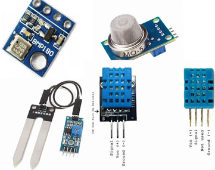
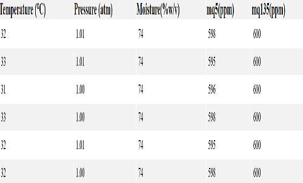

Various Sensors like BMP180, MQ5, MQ135, FC-28, DHT-11 etc. are employed on rover for analysis of soil characteristics.
BMP180 is used to calculate pressure and temperature of surrounding environment.
MQ5 and MQ135 are used to detect the presence of various gases in the atmosphere.
FC-28 is used to detect the sense the moisture content of the soil.
DHT-11 is used to sense the sub-surface temperature and humidity under the ground.


ANALYSIS
The objective is to investigate several sites using minimally-invasive measurements for evidence of photosynthetic microorganisms,
bacterial colonies, or other microbial extremophiles.
Of each site, atleast two pictures are captured: one, a close-up high-resolution picture and the other,
a wide-angle panorama along with cardinal directions, GPS coordinates, elevation, scale and accuracy range.
Various sensors like FC-28, MQ35, MQ135, BMP180 etc. are mounted on the rover for detecting the pressure, temperature and moisture of the soil and the surrounding
environment.
SOIL COLLECTION
For soil collection, a vertical auger capable of rotating about its axis in either direction is used to drill the hole in the ground.
This auger passes through a triangular box which moves along with the auger in the vertical direction.
For drilling, the vertical lead screw and auger motor are operated manually, until a depth of 10 cm is achieved.
A rotating container consisting of 5 different compartments is designed to store the soil from different test sites.
Once the required depth is achieved, the subassembly is lifted by the lead screw, and the container is rotated until the required compartment lies below the opening of the triangular box.
It is then rotated anti-clockwise so as to deposit the soil sample for testing.